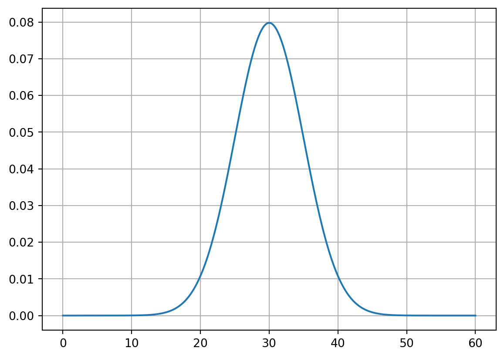

import numpy as np
import matplotlib.pyplot as plt
from scipy.stats import norm
x = np.linspace(0, 60, 300)
y = norm.pdf(x, loc=30, scale=5)
plt.plot(x, y)
plt.grid(True)
plt.show()
yongraegod
September 2, 2024
같은 방법으로 500개의 𝑠2 들, 𝑠21, 𝑠22, …, 𝑠2 500 발생시킵니다.
발생한 500개의 𝑠2 들 각각에 4.75를 곱하고, 그것들의 히스토그램을 그려보세요. (히스토그램을 그릴 때 probability = TRUE 옵션을 사용해서 그릴 것)
위에서 그린 히스토그램에 자유도가 19인 카이제곱분포 확률밀도함수를 겹쳐그려보세요.